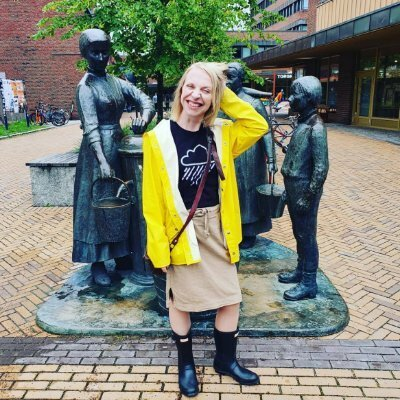
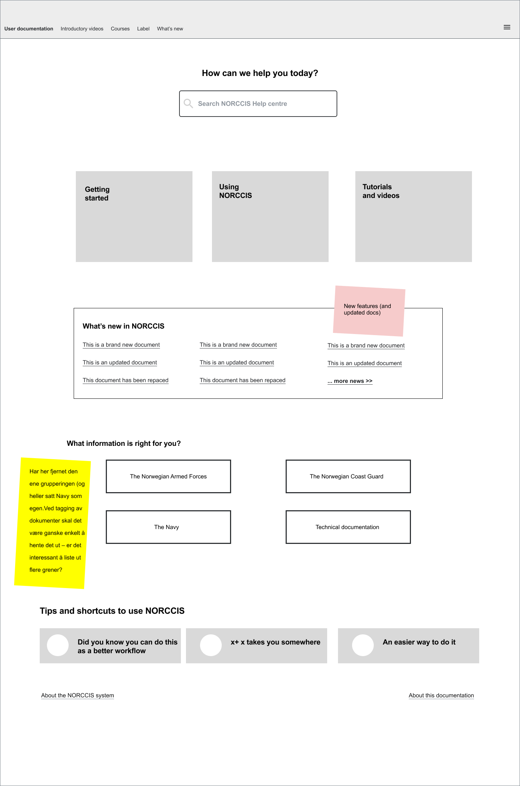
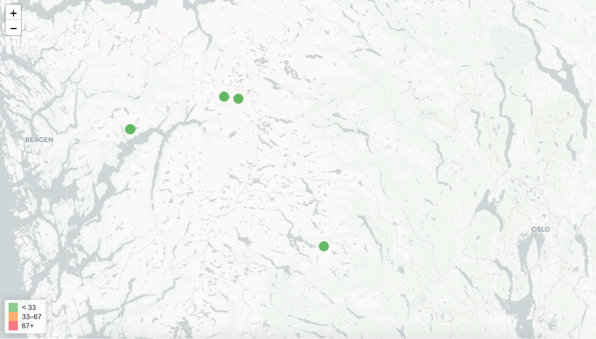
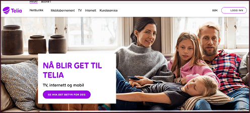
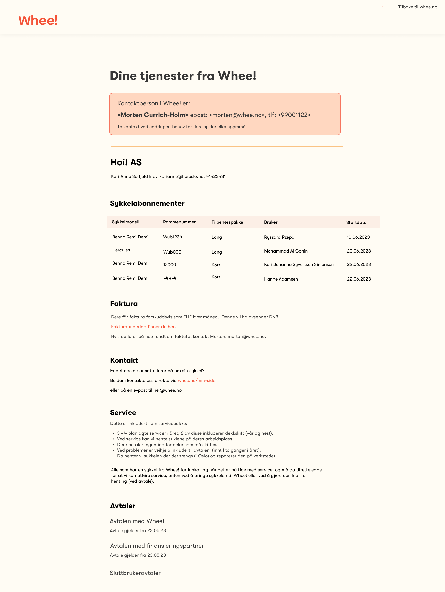
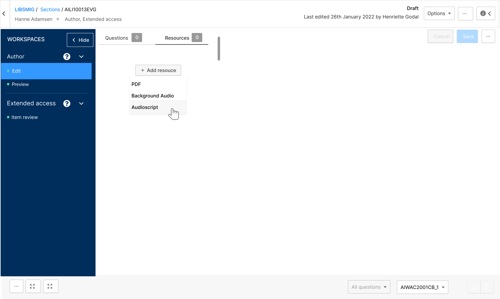

Anniken Hogstad
Senior UX- og tjenestedesigner
Jeg har over 15 års erfaring med å jobbe i tverrfaglige team for å skape brukervennlige løsninger som løser komplekse utfordringer. Jeg kombinerer analytisk dybde med kreativ problemløsning for å drive endringsprosesser fremover.

Om meg
Brukersentrert design, tekst og interaksjon
Utvalgte prosjekter
Fra kompleks dokumentasjon til intuitive dashboards: her er eksempler på ting jeg har gjort.

NORCCIS Hjelpedokumentasjon
Oversettelse, interaksjonsdesign, universell utforming og brukertesting av hjelpedokumentasjonen til NORCCIS.
Problemet: Hjelpedokumentasjonen til NORCCIS var skrevet av ulike personer over tid, uten konsistent struktur eller språk. Brukerne – mange med engelsk som førstespråk – slet med å finne relevant informasjon.
Prosess: Startet med å kartlegge eksisterende dokumentasjon og identifisere de største smertepunktene gjennom samtaler med brukere fra ulike forvaltningsområder. Utviklet protopersonas for å forstå behovene til erfarne vs. nye brukere. Tegnet ut informasjonsarkitektur i Figjam og testet tidlige skisser på navigasjon og søkefunksjonalitet.
Metodikk: Evaluerte tredjepartsløsninger opp mot tekniske krav, sikkerhetskrav og brukervennlighet. Utarbeidet standard for universell utforming og klarspråk som mal for oversettelse til engelsk.
Resultat: Levert trådskisser, retningslinjer for språk og visuell profil, og validert navigasjonsstruktur. Standardene brukes nå som grunnlag for videre innholdsarbeid.
Hovedleveranser
- Trådskisser på seksjonssider, søkeside og forside
- Evaluering og valg av tredjepartsløsning
- Standarder for universell utforming og klarspråk
- Visuelle retningslinjer
- Brukerhistorier
- Brukertesting

Icebox
Tjenestedesign for å kartlegge og forbedre arbeidet med overvåking av kraftlinjer.
Tjenestedesignprosjekt for å kartlegge arbeidsrutuner og forbedre sikkerhet i arbeidet på de enkelte stasjonene. Samarbeidet med Meteorologisk instituttm Norconsult og Sintef for å identifisere og visualisere kritiske dataelementer inn i et dashboard. Brukte Miro for å tegne ut brukerreisen i dag og ønsket brukerreise i fremtiden.
Høydepunkter
- Intervjuer med brukere på forskjellige stasjoner
- Uttegning av brukerreise i Miro
- Dashboards i Grafana med Meteorologisk data og data fra last på ledninger
- Uttegning av ønsket brukerreise i fremtiden
- Samarbeid med Statnetts designsystem

Springstar
UX Lead for prosjektet som slo sammen Get og Telia
Problemet: Telia kjøpte Get og skulle integrere TV- og bredbåndstjenester i sin portefølje. Hundretusener av kunder måtte migreres uten friksjon – samtidig som to ulike designsystemer, kundereiser og innloggingsløsninger skulle samkjøres.
Min rolle: UX Lead med totalansvar for brukeropplevelsen på innloggede og utloggede flater. Koordinerte designressurser fra begge organisasjoner.
Prosess: Startet med å kartlegge eksisterende kundereiser i begge selskaper for å identifisere overlapp og konflikter. Satte opp prioriteringsplan sammen med innholdslead og tech lead. Gjennomførte designsynk annenhver uke for å sikre konsistens i designsystemet under sammenslåingen.
Metodikk: Brukertester før, under og etter lansering – først uten firmanavn (konfidensiell fase), deretter med faktiske kunder fra begge selskaper. Designet løsninger for kompleks innlogging/rollestyring der kunder kunne ha abonnementer hos begge.
Resultat: Lansering med minimal kundefriksjon. Brukertester etter lansering bekreftet at overgangen opplevdes som positiv. Gets mobilkunder fikk sømløs overgang til Telia-abonnement, og strømmetjenester ble integrert i TV-tilbudet.
Resultater
- Omfattende brukerinnsikt fra både Get og Telia
- Uttegning av flyt for innlogging og skifte mellom sider i overgangen
- Designsystem
- Landingssider for borettslag og bedrifter
- Oppdatering av app, utfasing av app
- Designstrategi

Whee! Bedrift
UX- og tjenestedesign for en ny side for administratorer av Whee!-avtaler i bedrifter.
Ledet tjenestedesign fra start til slutt med datadrevet tilnærming til produktdesign. Jobbet tett med utvikler og produkteier for å forstå brukernes behov og forretningsmålene. Samlet kontinuerlig inn brukerinnsikt gjennom spørreundersøkelser med pilotbrukere og dybdeintervjuer med administratorer i bedrifter. Utviklet og testet skisser for bedriftsløsning tidlig i prosessen, og itererte basert på tilbakemeldinger.
Brukerreiser: Kartla hele kundeopplevelsen fra interesse for lastesykkel til daglig bruk, inkludert testing, eierskap og servicebehov gjennom verkstedintervjuer og kundeinnsikt.
Høydepunkter
- Brukergrensesnitt for egen side for administratorer
- Brukerinnsikt og oppfølging
- Responsiv design på tvers av enheter
- Informasjonsfløyt mellom løsninger
- Tilpasninger ettersom bedriften ville betale mer eller mindre av avtalen

Inspera Assessment
UX Design for forfattermodul i digital eksamensplattform
UX-design og brukeroppleelse for Insperas digitale eksamensplattform. Fokus å tilgjengelighet, brukervennlighet og gjenkjennelse hos kunder som Cambridge og Oxford. Ukentlige oppdateringer av designsystem i samarbeid med resten av designerne i Inspera.
Resultater
- Brukergrensesnitt for digital eksamen
- Universell utforming og tilgjengelighet
- Høy pålitelighet i kritiske situasjoner
- Intuitive navigasjonsmønstre
- Støtte for komplekse oppgavetyper
Ting jeg gjør
Fra strategi til implementering - en helhetlig tilnærming til brukeropplevelse
UX & Tjenestedesign
Design & Visualisering
Strategi & Analyse
Tilgjengelighet & Innhold
Kontakt
E-post
Telefon
+47 993 90 673
Bluesky
Lokasjon
Oslo, Norge